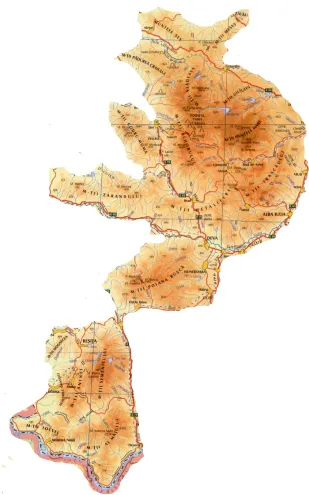
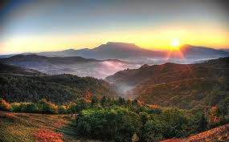
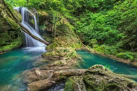
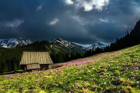
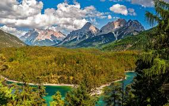

Carpații Occidentali, una dintre cele trei grupe mari muntoase ale României.
Denumirea lor este dată referitor la poziția lor geografică (la vest, deci occidentali
ca poziție) față de Depresiunea Colinară a Transilvaniei, care asigură simultan și
limită lor estică, respectiv față de Culoarul Timiș-Cerna pentru Munții Banatului
grupului sudic al Occidentalilor.
Carpații Occidentali se desfășoară între Dunăre, Barcău și Someș. Au o altitudine
maximă de 1849 m în Munții Bihor, Vârful Curcubăta Mare. Discontinuitatea este o
caracteristică de bază ale acestora. Alcătuirea geografică este foarte variată,
existând un adevărat "mozaic petrografic" (fliș, șisturi cristaline, calcare,
roci eruptive, roci metamorfice).
Grupe majore de munți în Carpații Occidentali
În Carpații Occidentali se disting trei grupe majore de munți:
* Munții Apuseni la nord de Mureș
* Munții Poiana Ruscă, situați central, la sud de Mureș
* Munții Banatului, în colțul sud-vestic al României și la sud de Mureș
Depresiuni intramontane
* Depresiunea Almăjului (Bozovici) pe valea râului Nera
* Depresiunea Caraş-Ezeriş, pe valea râului Caraş
* Depresiunea Zarandului, pe valea râului Crişul Alb
* Depresiunea Beiuş, pe valea râului Crişul Negru
* Depresiunea Vad-Borod, pe valea râului Crişul Repede
Pasuri și trecători
* Pasul Domaşnea (sau Poarta Orientală), în Culoarul Timiș-Cerna
* Pasul Poarta de Fier a Transilvaniei, în Culoarul Bistriței
* Pasul Ciucea, pe Crişul Repede, între munții Vlădeasa și Plopiş
* Defileul Mureșului
* Culoarul Timiș-Cerna
* Culoarul Bistriței
Chei
* Cheile Turzii
* Cheile Nerei
* Cheile Caraşului
* Cheile Minişului
Trăsăturile generale comune ale Carpaților Occidentali
* altitudinile mai coborâte, substratul petrografic mai variat cu forme de relief
diversificate
* fragmentarea accentuată, îndeosebi în partea de vest, unde s-au format
depresiunile-golf
* discontinuitatea indusă de Câmpia Lugojului și Valea Mureșului, care îi separă
în trei grupe: Munții Banatului, Poiana Ruscă și Munții Apuseni
* locuirea integrală (până la mari înălțimi), străveche și continuă a întregului
teritoriu
* resurse diversificate (minereuri de fier, aur-argintifere, bauxită, minereuri
de cupru și polimetalice, cărbuni, roci de construcție, pășuni, păduri,
ape minerale, hidroenergie), singurele zăcăminte de minereuri rare – mercur,
molibden, crom, nichel, magneziu
* o utilizare foarte veche a resurselor de minereuri (epoca bronzului și
fierului, epoca dacoromană, evul mediu) și o utilizare timpurie la scară
industrială a resurselor industriei siderurgice (Reșița, Hunedoara)
* o rețea de așezări rurale, foarte mult adaptată la condițiile reliefului și
activitățile economice predominante, cu o frecvență mare a localităților cu
textura risipită și răsfirată, legată strâns de hinterlandul lor apropiat
* la acestea se adaugă un potențial turistic deosebit de bogat și variat, dar
insuficient utilizat până în prezent
Una dintre caracteristicile esențiale ale Carpaților Occidentali
Discontinuitatea indusă de culoarul Câmpia Lugojului și culoarul Mureșului, segmentează
spațiul montan în trei unități distincte:
* Munții Banatului (între Dunăre și Câmpia Lugojului)
* Munții Poiana Ruscă (între Câmpia Lugojului, culoarul Bistriței și Valea Mureșului)
* Munții Apuseni (la nord de Mureș)
Fiecare unitate are o serie de trăsături fizico-geografice și economico-geografice
relativ distincte, care le conferă caracteristici geografice proprii, atât la nivel
regional cât și la nivelul întregii țări.

Harta Carpaților Occidentali

Cheile Turzii - O minune a naturii

Munții Apuseni - Peisaj de vis

Cheile Nerei - Frumusețe naturală

Poiana Ruscă - Peisaj montan

Munții Banatului - Priveliști spectaculoase